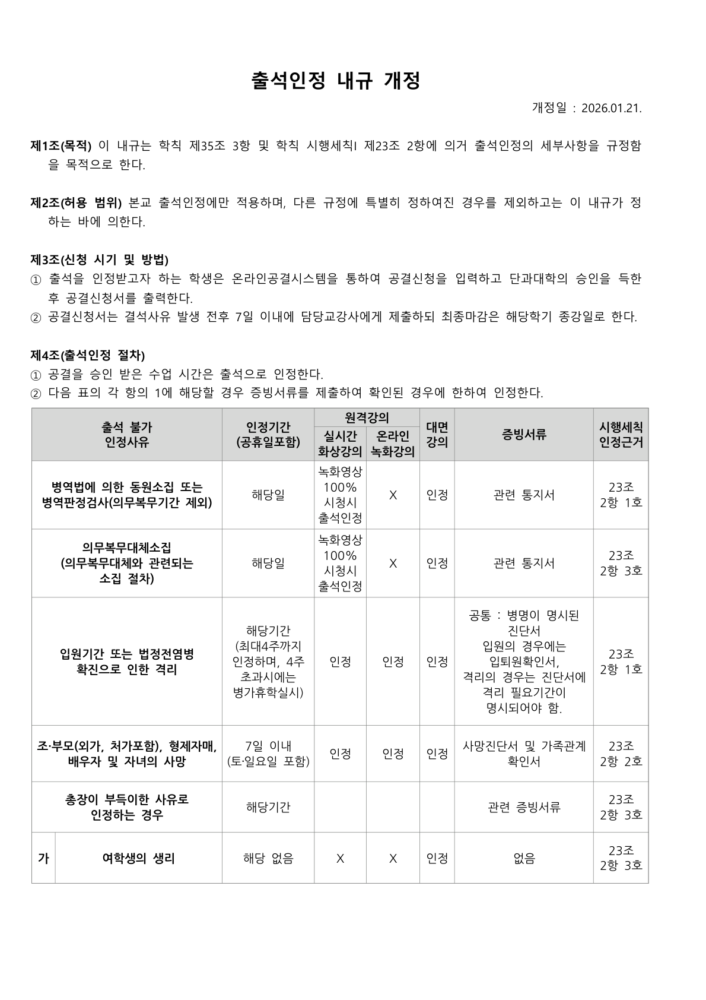
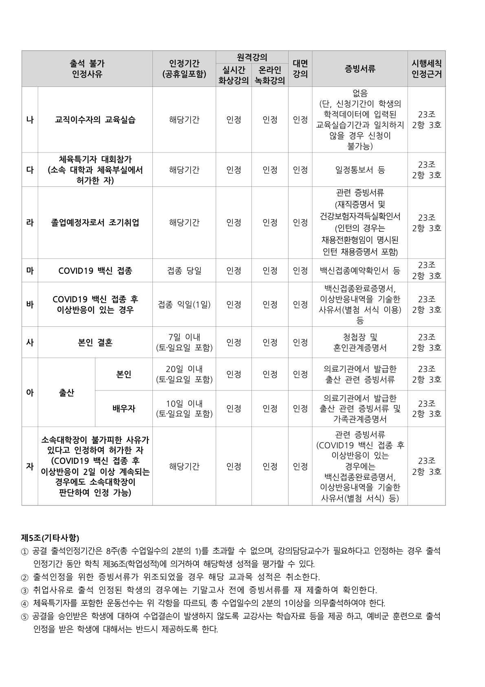
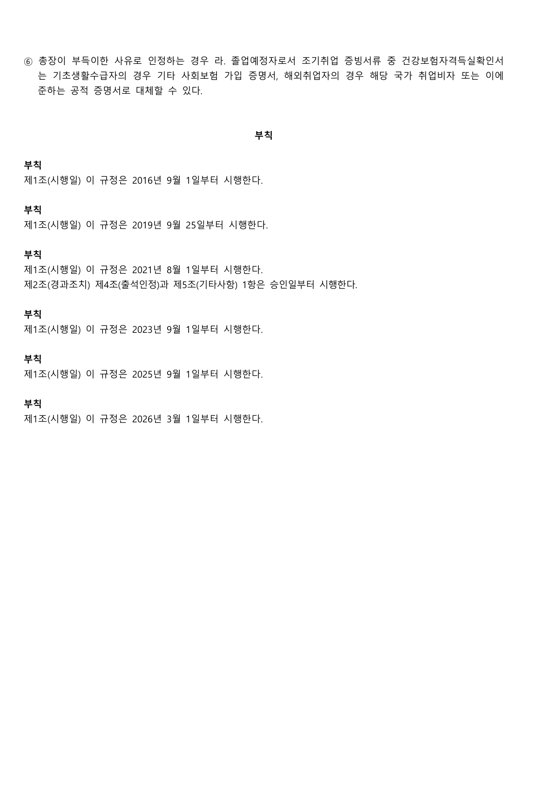

출석 인정 내규
출석인정 내규 개정(안)의 원문 내용을 확인할 수 있습니다.



강의시간교시체계
교시체계안내
75분 수업(75분수업 + 15분 휴식)을 도입하여 실시함에 따라 1교시가 30분 단위로 운영됩니다.
수업교시표
| 교시 | 시간 | 교시 | 시간 | 교시 | 시간 | 교시 | 시간 |
|---|---|---|---|---|---|---|---|
| 1 | 08:00~08:30 | 9 | 12:00~12:30 | 17 | 16:00~16:30 | 25 | 20:00~20:30 |
| 2 | 08:30~09:00 | 10 | 12:30~13:00 | 18 | 16:30~17:00 | 26 | 20:30~21:00 |
| 3 | 09:00~09:30 | 11 | 13:00~13:30 | 19 | 17:00~17:30 | 27 | 21:00~21:30 |
| 4 | 09:30~10:00 | 12 | 13:30~14:00 | 20 | 17:30~18:00 | 28 | 21:30~22:00 |
| 5 | 10:00~10:30 | 13 | 14:00~14:30 | 21 | 18:00~18:30 | 29 | 22:00~22:30 |
| 6 | 10:30~11:00 | 14 | 14:30~15:00 | 22 | 18:30~19:00 | 30 | 22:30~23:00 |
| 7 | 11:00~11:30 | 15 | 15:00~15:30 | 23 | 19:00~19:30 | 31 | 23:00~23:30 |
| 8 | 11:30~12:00 | 16 | 15:30~16:00 | 24 | 19:30~20:00 | 32 | 23:30~24:00 |
※ 1~2교시는 대학원 수업 시간대이며, 3교시부터는 ERICA 학부 수업이 진행되고, 19교시 이후는 일과 후입니다.
모든 교시가 30분 단위이므로 1시간 수업은 2개교시, 75분 수업은 3개교시가 배정됩니다.
1시간 및 2시간 수업의 휴식시간은 50분 수업 후 10분 휴식으로 운영됩니다. 다만, 이론수업 중 3시간 이상의 수업에만 75분 수업제를 적용하며 75분 수업 후 15분 휴식으로 운영됩니다.
학수번호/수업코드
학수번호
학수번호란 각 교과목의 고유 식별 번호이며 알파벳 3자와 숫자 4자리 등 총 7자리로 구성되어 있으며, 일곱 자리의 학수번호가 일치할 경우에만 같은 과목으로 인정합니다. 학수번호는 한 번 과목으로 신설되면 절대 변경되거나 없어지지 않으며 영원히 사용하게 됩니다. 예) CUL1057 (과목명: IT경영)
수업코드
수업코드란 수강신청 및 수업진행상의 편의를 위해 한 학기에 설정되는 수업에 대해 일련번호를 매겨 놓은 것으로, 매학기 다르게 번호가 부여됩니다.
맨 위로 ↑특수수업
특수강좌란 정규강좌 중 일반강좌와는 달리 특별한 형태로 운영하는 수업을 말하며, 수강편람의 「과목상세정보」에 표기되어 있습니다.
특수수업 유형 한눈에 보기
| 구분 | 운영 형태 | 주요 안내 |
|---|---|---|
| 영어전용강좌 | 100% 영어 수업 | 수업 진행 및 평가가 모두 영어로 운영됩니다. |
| SMART 강좌 | 온라인·오프라인 병행 | 주차 또는 한 주 안에서 온라인과 오프라인 수업이 병행됩니다. |
| IC-PBL 강좌 | 문제·프로젝트 기반 학습 | 대학과 산업체·지역사회가 연계된 문제 해결 중심의 교육 모델입니다. |
| 제2외국어전용 | 한국어·영어 이외의 언어로 진행 | 중국어, 프랑스어, 독일어 등의 언어 강좌입니다. |
| HY-LIVE | 텔레프레즌스 기반 수업 | 오프라인 수업과 온라인 수업을 병행하는 Sharing Education 모델입니다. |
| 초청강연강좌 | 외부초청연사 옴니버스 수업 | 주별로 외부초청연사가 수업을 담당합니다. |
| e-러닝 강좌 | 온라인 강좌 | 교내 개발 강좌 및 학점교류 e-러닝 강좌가 포함됩니다. |
| 대단위강좌 | 대규모 수강인원 강좌 | 학부 101명 이상, 대학원 51명 이상인 강좌입니다. |
영어전용강좌
학부 영어전용강좌는 100% 영어로만 운영되는 강좌입니다. 수업 진행 및 평가(과제 및 시험문제, 답안) 모두 영어로 운영됩니다.
SMART 강좌
SMART 강좌는 온라인 콘텐츠와 오프라인 혹은 온라인 수업이 병행된 블렌디드 교과목으로 운영되는 강좌입니다.
| 구분 | 내용 | 비고 |
|---|---|---|
| SMART-F | 한 주차에 온라인+오프라인(혹은 온라인*) 병행 수업 | 예) 월요일: 온라인 / 화요일: 오프라인 |
| SMART-B | 주차별로 온라인, 오프라인(혹은 온라인*) 수업이 진행되는 수업 | 예) 1, 2주차: 오프라인 / 3, 4주차: 온라인 |
IC-PBL 강좌
IC-PBL이란 Industry-Coupled Problem/Project Based Learning의 약자로, 대학과 산업체(Industry), 지역사회(Society)가 유기적으로 연계되어 학습자가 실제 사회에서 발생하는 문제 해결 중심의 학습을 경험할 수 있도록 설계된 교육 모델입니다.
IC-PBL 수업모델은 M, E, C, A의 세부 수업유형으로 구성되며, 이 중 한 가지 유형을 선택하여 개발해야 합니다.
IC-PBL 수업 유형의 결정은 크게 1) 문제 혹은 프로젝트가 실제 기업 혹은 사회의 문제인지, 2) 결과물을 평가하는 사람이 실제 기업 혹은 사회의 관계자인지에 따라 결정할 수 있습니다.
| 유형 | 수업 방식 |
|---|---|
| M(현장통합형) | 기업 또는 지역사회로부터 실제 현장의 문제(또는 프로젝트)를 받아 이를 해결하는 수업을 진행하고, 수업 후 현장 관계자가 결과물을 평가하는 수업 유형입니다. |
| E(현장평가형) | 교수자가 개발한 문제(또는 프로젝트)로 수업을 진행하고 현장 관계자가 결과물을 평가하는 수업 유형입니다. |
| C(문제해결형) | 교수자가 개발한 문제(또는 프로젝트)를 중심으로 수업을 진행하고 교수자가 결과물을 평가하는 수업 유형입니다. |
| A(현장문제형) | 실제 현장의 문제(또는 프로젝트)를 중심으로 수업을 진행하고 교수자가 결과물을 평가하는 수업 유형입니다. |
제2외국어전용
한국어나 영어 이외의 언어로 진행되는 강좌입니다(예: 중국어, 프랑스어, 독일어 등).
HY-LIVE
「텔레프레즌스 기반 HY-LIVE 강좌」란
Telepresence(텔레프레즌스)란 Tele(원거리)와 Presence(실제)의 합성어로, 멀리 떨어져 있는 사람을 현재 공간으로 불러오는 기술을 말합니다. 5G Telepresence 기술과 실재감 있는 홀로그램 기술을 활용하여 오프라인 수업과 온라인 수업을 병행하는 강의 방식으로, 한양대학교에서 최초로 개발한 Sharing Education 교육 모델입니다.
「텔레프레즌스 기반 HY-LIVE 강좌」 교과목을 통해 얻을 수 있는 내용
HY-LIVE 강좌는 강의실별로 숙련된 TA(Teaching Assistant)를 배정하고, IAB(Industry Advisory Board) 현장전문가를 연결하는 등 활발한 상호작용이 일어날 수 있도록 커리큘럼을 구성합니다. 이를 통해 수강생은 AI+X Nanotrack 핵심교양과목별 주제에 보다 쉽게 접근하고 이해할 수 있습니다.
「텔레프레즌스 기반 HY-LIVE 강좌」 교과목
HY-LIVE 강좌는 총 4개 강좌로 구성되어 있으며, 학기별 수강신청기간에 맞춰 타 과목과 동일하게 수강신청합니다.
생활속의화학 (GEN6086) - 핵심교양(2학점)
AI+X Nanotrack - 핵심교양(3학점): AI+X : R-Python (AIX0004), AI+X : 머신러닝 (AIX0005), AI+X : 딥러닝 (AIX0003)
초청강연강좌
주관교수의 사전 강의계획에 따라 외부초청연사가 주별로 각각 수업을 담당하는 옴니버스 강좌입니다.
e-러닝 강좌
| 타입 | 내용 |
|---|---|
| e-러닝 타입 A | 한양대학교 자체 개발 온라인 강좌(교내 e-러닝 강좌)입니다. |
| e-러닝 타입 C | 학점교류 e-러닝으로, 대학 e-러닝 기반 학점인정 컨소시엄에서 운영하는 강좌입니다. |
| e-러닝 타입 D | 학점교류 e-러닝으로, 한양사이버대학교에서 운영하는 강좌입니다. |
대단위강좌
101명 이상(대학원은 51명 이상)이 수강하는 강좌는 대단위 강좌로 표기됩니다.
맨 위로 ↑졸업요건 확인 관련
1) 필수과목 이수내역 확인
학기별로 적용되는 필수과목은 졸업사정조회 메뉴에서 확인할 수 있습니다.
| 구분 | 확인 방법 및 유의사항 |
|---|---|
| 확인 메뉴 | 졸업사정조회 → 미필과목이수여부 |
| 미이수 필수과목 | 지난 학년에 수강하지 못한 필수과목이 있을 경우 반드시 우선하여 수강하여야 합니다. 미이수 필수 교과목은 소속학과 교육과정에 존재하는 한 이수구분이 변경되더라도 필수 이수대상입니다. |
| 학적변동 유의사항 | 휴학, 복학 등 학적변동 이후 학기별 적용 교육과정에 따라 필수과목이 추가될 수 있습니다. 특히 월반복학 시에는 월반하여 건너뛴 학기의 교육과정이 함께 적용되므로 복학 시 월반 학기의 필수과목이 추가될 수 있습니다. |
2) 필수과목 이수조회 확인 시점
- 복학 예정 학생은 복학 처리 후 필수과목을 확인하여야 합니다.
- 복학처리 시점이 늦어져 필수과목 일괄 적용 이후가 되는 경우, 수강신청 기간 중 필수과목 적용내역을 확인하지 못할 수 있습니다.
- 복학이 늦어지는 경우 반드시 소속학과를 통하여 필수과목 이수여부를 정확하게 확인하시기 바랍니다.
3) 선수강 교과목 이수여부 확인
학생별로 적용되는 선수강 교과목은 졸업사정조회 메뉴에서 확인할 수 있습니다.
| 구분 | 내용 |
|---|---|
| 확인 메뉴 | 졸업사정조회 → 선수강이수여부 |
| 수강신청 유의사항 | 선수강 교과목은 졸업 전까지 반드시 이수하여야 하므로, 수강신청 시 해당 교과목을 확인하고 우선하여 신청하시기 바랍니다. |
| 대치/동일 과목 | 입학 당시 전공기초교과목이 대치 또는 동일 과목으로 지정된 경우, 반드시 대치/동일 지정된 과목으로 이수하여야 합니다. |
4) 저학년 및 소속학과 교과목 수강 유의사항
- 저학년 과목에 여석이 없는 경우 전 학년 수강신청 기간 및 개강 후 정정기간을 이용하시기 바랍니다.
- 아카데믹글쓰기, 학술영어, AI 리터러시, 파이썬과인공지능 등 교양필수 및 전공기초 교과목 중 소속학과(대학)에 설강된 교과목은 소속학과 개설 강좌를 우선적으로 수강하시기 바랍니다.
- 개강 후에도 타 학과에 개설된 과목은 수강신청이 제한될 수 있습니다.
- 수강인원 제한으로 수강신청이 되지 않는 경우 설강학과로 문의하시기 바랍니다.
강좌별 세부 정보 확인 방법
각 항목의 + 버튼을 눌러 확인 방법을 펼쳐볼 수 있습니다.
1) 수업계획서 및 교과목개요서 확인
수강신청 화면에서 교과목 조회 후 수업번호를 클릭하면 수업계획서를 조회할 수 있으며, 학수번호 혹은 교과목명을 클릭하면 교과목개요서를 확인할 수 있습니다.
| 확인 항목 | 클릭 위치 | 확인 내용 |
|---|---|---|
| 수업계획서 | 수업번호 | 수업 운영 방식, 평가, 교재, 주차별 계획 등 |
| 교과목개요서 | 학수번호 또는 교과목명 | 교과목 개요 및 기본 정보 |
2) 전공 및 교양 교과목 배정인원 확인
| 구분 | 확인 방법 | 수강신청 기간 표시 기준 |
|---|---|---|
| 전공 강좌 | 수강신청화면에서 교과목 조회 후 '수강/정원' 칸에 강좌별 수강인원 및 총정원이 표기됩니다. 해당 숫자를 클릭하면 학년별/다전공 세부 배정인원을 확인할 수 있습니다. | 본인 해당 수강신청기간에는 '수강/정원' 칸의 숫자가 본인에게 해당되는 세부 배정인원으로 표시됩니다. |
| 교양 강좌 | 수강신청화면에서 교과목 조회 후 '수강/정원' 숫자를 클릭하면 학년별 세부 배정인원이 조회됩니다. | 본인 해당 수강신청 기간에는 '수강/정원' 숫자가 본인에게 해당되는 배정인원으로 표시됩니다. |
3) 다전공 배정인원 관련
학과에 개설된 전체 강좌에 대하여 정원의 최소 5%에 해당되는 인원이 다전공 인원으로 배정됩니다.
(학년별 수강신청 시 주전공+다중전공으로 이미 다중전공 수요를 소화한 과목 등 예외가 있을 수 있음)
4) 강좌별 이수제한 확인
이수제한이 설정된 교과목의 경우 '이수제한여부'에 '○'가 표시되며, 해당 '○' 표시를 클릭하면 이수제한 상세내역을 확인할 수 있습니다.
재수강 안내
1) 성적상승 재수강
| 구분 | 내용 |
|---|---|
| 신청 범위 | 수강신청 최소·최대 학점 범위 내에서 신청 가능하며, 재수강 신청학점 수를 별도로 제한하지 않습니다. |
| 대상 교과목 | 두 교과목의 학수번호가 동일한 경우 또는 동일과목으로 지정된 과목에 한하여 재수강이 허용됩니다. |
| 신청 확인 | 성적상승재수강을 신청한 경우 신청란에 “성적상승”으로 표기되므로 반드시 해당 여부를 확인해야 합니다. |
| 동일과목 유의사항 | 동일과목은 성적상승으로만 수강할 수 있으며, 일반과목 수강신청으로 다시 수강하는 것은 불가능합니다. |
| 재수강 횟수 | 2019학년도 1학기부터 과목당 재수강 횟수는 2회로 제한됩니다. 2018학년도 2학기까지의 재수강 횟수와는 무관하며, 2019학년도 1학기부터의 재수강 횟수부터 산정됩니다. |
- 예: 성적상승재수강 전 “전공핵심, C, 3학점”이고 재수강 후 “전공심화, A0, 2학점”인 경우 최종 처리 내역은 “전공핵심, A0, 2학점”입니다.
- 다만 이수구분이 일반선택인 과목의 재수강은 성적상승이 된 학기의 이수구분으로 처리됩니다.
- 이전에 IC-PBL, 영어전용강좌 등이었으나 일반과목으로 변경된 과목을 성적상승재수강한 경우, IC-PBL 또는 영어전용강좌 이수로 인정되지 않습니다.
- 성적증명서는 성적상승재수강 전·후 성적 중 상위 성적으로 발급됩니다.
2) 미취득 과목(F학점 과목)의 재수강
| 구분 | 재수강 기준 |
|---|---|
| 자과 교육과정에서 교양필수 또는 전공기초였던 과목 | 현행 교육과정 기준으로 존속하는 과목은 과목구분이 변경되었더라도 반드시 이수하여야 합니다. 현행 교육과정 기준으로 폐강된 과목은 수강하지 않아도 되며, 자세한 사항은 소속학과에서 확인하시기 바랍니다. |
| 필수과목이 아닌 기타 미취득 교과목 | 교양 또는 전공 선택과목이었던 과목은 본인의 의사에 따라 수강 여부를 선택할 수 있으며, 수강신청에서 재수강 과목 수와 학점 수를 제한하지 않습니다. |
성적 처리 및 증명서 표기
| 이수 시기 | 성적증명서 표기 | 평점평균 반영 | 재수강 성공 시 |
|---|---|---|---|
| 2013학년도 2학기까지 | NA | 미포함 | 이전 과목의 NA 표기 성적 삭제 |
| 2014학년도 1학기부터 | F | 포함 | 이전 과목의 F 표기 성적 삭제 |
성적평가방법 안내
1) 성적평가 적용 기준
| 유형 | A 비율 | A+B 비율 | 성적평가 세부 적용 내용 |
|---|---|---|---|
| 상대평가1 | 30% | 70% | 이론 교과목 중 수강인원 12명 이상 강좌 |
| 상대평가2 | 40% | 80% | 이론/실습 교과목 중 수강인원 20명 이상 강좌 |
| 상대평가3 | 50% | 90% | IC-PBL교과목, 초청강연강좌 중 창의융합교육원 별도 요청 강좌 |
| 상대평가4 | 40% | - | 교육혁신처장 별도 승인 강좌 |
| 절대평가 | - | - |
|
| P/F | - | - |
|
2) S/U평가 제도
S/U평가는 타전공 교과목 이수 활성화를 목적으로 하며, 타전공 교과목을 수강하는 학생이 성적평가 방법을 원 평가방식 또는 S/U평가로 선택할 수 있도록 하는 제도입니다.
| 구분 | 내용 |
|---|---|
| 시행 시기 | 현행 기준에 따라 시행 중 |
| 신청기간 | 중간시험 이후부터 기말시험 전(성적처리 전)까지이며, 세부 일정은 학사운영팀에서 별도 안내 예정입니다. 신청기간 이후에는 어떤 사유로도 변경 또는 취소할 수 없습니다. |
| 신청방법 | HY-in 포털 로그인 → 신청 → 성적 → S/U등급 평가 신청에서 학생이 직접 온라인으로 신청하여야 합니다. |
| 신청 가능 범위 | 학기당 1과목 신청 가능하며, 재학 중 최대 9학점까지 신청 가능합니다. |
| 신청 가능한 교과목 | 해당 학기 등급제 평가 방식 교과목 중 타전공 일반선택으로 신청된 교과목에 한합니다. 단, 교육혁신처장이 지정 또는 제외할 수 있습니다. |
S/U평가 성적처리 기준
| 등급 | 점수 | 졸업학점 반영 | 평균평점 반영 |
|---|---|---|---|
| S(Satisfied) | 70 ~ 100 | 반영 | 미반영 |
| U(Unsatisfied) | 0 ~ 69 | 미반영 | 미반영 |
- S/U평가를 선택한 과목은 원 평가방법으로 성적 입력 후 S/U 기준에 따라 처리됩니다.
- S등급을 취득한 교과목은 재수강할 수 없으며, U등급을 받은 경우 성적재수강 성적처리 규정에 따라 성적을 부여합니다.
- U등급은 미이수이므로 졸업학점 이수에 해당하지 않습니다.
3) 학점포기제도
학점포기제는 기취득한 성적을 본인의 의사에 따라 포기하는 제도입니다.
| 구분 | 내용 |
|---|---|
| 시행 시기 | 현행 기준에 따라 시행 중 |
| 신청기간 | 학기 중 지정기간에 신청합니다. 세부 일정은 학사운영팀 안내, 포털 공지사항 및 학사안내 홈페이지를 참고하시기 바랍니다. |
| 신청자격 | 학위과정을 이수 중인 주전공 수업연한의 잔여학기가 2개 학기 이내인 재학생(학업연장 재수강자 포함) |
| 신청방법 | HY-in 포털 → 신청 → 성적 → 학점포기신청에서 학생이 직접 온라인으로 신청하여야 합니다. |
| 대상 범위 | 재학 중 9학점 이내로 신청 가능합니다. |
대상 과목
- 주전공 기준 전공핵심, 전공심화 교과목과 타전공(일반)선택 교과목
- 주전공 기준 교육과정의 개편·변경으로 인해 폐지되어 재수강이 불가능한 전공기초교과목
- 교육과정의 개편·변경으로 인해 교육과정에서 폐지되거나 직전학기를 포함하여 개설학기에 미개설되어 재수강이 불가능한 교양 교과목
포기 제외 과목
- 학과교육과정에 등재되어 운영 중인 주전공의 필수이수 과목
- 공통교육과정에 등재되어 직전학기를 포함하여 개설학기에 정상 운영된 교양과목
- P/F평가로 성적처리 된 과목
- 등급으로 성적처리되는 과목 중 평균평점 제외 과목
- 교직과목 및 ROTC 과목
- S/U평가로 성적처리 된 과목
- 교환학생, 학점교류제, 현지학기제, 현장실습, 창업대체 등을 통해 외부 기관에서 취득한 인정학점
- 편입생의 전적대학 인정학점, 복수학위제 학생의 원소속 대학 인정학점, 기타 외부에서 취득한 인정학점
- I등급 학점
- 직전 학기 이수 학점에 대한 성적을 포기할 경우 국가장학금 및 교내·교외 장학금 수혜 내역에 변동사항이 생길 수 있습니다.
- 학점포기 가능과목은 매학기 교과운영에 따라 변경될 수 있습니다.
- 학점포기 신청을 제출하였더라도 일부 교과목은 교육과정상 포기가능 교과목 오류, 장학 영향 등의 사유로 개별통보 후 취소될 수 있습니다.
- 스마트융합공학부(조기취업형 계약학과)는 학점 이수 현황에 따라 재매칭 대상자로 변동될 수 있으므로 유의하여 신청하시기 바랍니다. 관련 문의는 031-400-4853~4856입니다.
- 전공에 따라 학점포기 시 공학교육인증(ABEEK)과 같은 졸업 관련 별도 인증제, 영어전용강좌 등 졸업조건 해당 분야에서 학점 또는 강좌수가 줄어들 수 있으므로 신청 전 반드시 확인하시기 바랍니다.
교과목 폐강 기준 안내
| 구분 | 폐강 기준 |
|---|---|
| 교양선택 및 영어전용강좌 | 수강인원 15명 미만 시 폐강 |
| 교양필수 교과목 | 수강인원 10명 미만 시 폐강 |
| 전공교과목 | 학년별 재학인원 25명 이상: 수강인원 10명 미만 시 폐강 |
| 학년별 재학인원 25명 미만: 수강인원이 재학인원의 40%(소수점 버림) 미만 시 폐강. 단, 수강인원 6명 미만인 경우 폐강 | |
| 캡스톤디자인, IC-PBL과비전설계 | 과목 수강인원 4명 미만 시 폐강 |
| 교직, 군사학, 연구실심화실습 교과목 | 수강인원 0명일 경우만 폐강 |
기타 제도별 유의사항
해당되는 제도를 선택해 세부 내용을 확인할 수 있습니다.
1) 온라인 강좌 수강 안내
| 구분 | 수업계획서 조회 및 수강 방법 | 유의사항 |
|---|---|---|
| 한양사이버대 강좌 | 한양사이버대학교 홈페이지(http://www.hycu.ac.kr/)에서 수업계획서 조회 및 수강 | 수강신청 시 반드시 개강 전 한양사이버대 홈페이지에서 공지사항을 확인하시기 바랍니다. |
| 서울권역이러닝강좌 | 교내 홈페이지를 통해 수강 | 수업계획서 및 시범강의는 서울권역e러닝센터 홈페이지(http://selc.or.kr)에서 확인 가능합니다. |
| 사이버토익 | 수업계획서의 수강 홈페이지 참고 | 온라인 강좌 신청 가능 학점 산정 시 사이버토익 포함 여부를 확인하시기 바랍니다. |
| K-MOOC강좌(E-러닝M) | K-MOOC 사이트 홈페이지에서 수업계획서를 조회하고 수강 | 학점교류 강좌이므로 수강신청 시 반드시 사이버강좌(가상대학영역) 수강 안내를 확인하시기 바랍니다. |
2) P/F 강좌 수강 안내
단, 사회봉사 및 P/F로 운영되는 교양필수 교과목은 최대 2회에 포함되지 않고 예외 처리됩니다.
3) 학부-대학원 공통 교육과정 교과목 수강 안내
2015학년도부터 학부 4학년생은 대학원 교과목을 수강할 수 있습니다. 대학원 교과목은 개인별 수강신청 가능학점 범위 내에서 최대 6학점까지 신청할 수 있습니다.
| 구분 | 내용 |
|---|---|
| 신청 대상 | 학부 4학년생 |
| 신청 가능 학점 | 개인별 수강신청 가능학점 범위 내 최대 6학점 |
| 학점 인정 | 전공학점으로 인정되며 졸업이수학점에 포함됩니다. |
| 수강신청 방법 | 수강신청시스템의 "학석사공통수강신청" 메뉴에서 별도로 지정된 일자에 온라인으로 신청할 수 있습니다. |
4) 영어전용강좌 의무 이수 안내
| 구분 | 내용 |
|---|---|
| 이수조건 | 2과목 이상 |
| 이수조건 산정 제외 과목 | 학술영어, 학술영어1:통합, 학술영어2:글쓰기, 영어커뮤니케이션1-초급/중급/고급, 영어커뮤니케이션2-초급/중급/고급은 영어전용강좌 의무 이수 과목 수에 포함되지 않습니다. |
| 의무이수 제외 대상 | 공학대학 융합시스템공학과, 스마트융합공학부, 약학대학, 경상대학 회계세무학과, 예체능대학 전체 학생 |
| 수강신청 시 확인 방법 | 영어전용강좌는 수강신청 시 특수수업구분에 ‘영어전용’으로 기재되어 있습니다. |
5) 영어 교양필수 강좌 안내
| 구분 | 내용 |
|---|---|
| 기존 교과목 운영 | “학술영어1:통합”, “학술영어2:글쓰기” 교과목은 2025년도 2학년 학생까지 기존 20-24 교육과정이 유지될 예정입니다. |
| 재수강반 운영: 학술영어 교과목의 재수강반 운영 여부와 종료 시기는 해당 교육과정 기준을 확인하시기 바랍니다. | |
| 신규 교과목 적용 | 2025학번 신입생이 2학년이 되는 해당 연도부터 “학술영어” 교과목이 교양필수 강좌로 적용될 예정입니다. |
| 수강신청 계열: 학술영어는 1학기에는 이공자연, 2학기에는 인문사회예체로 나누어 운영하고 있습니다. 다만 본인 계열이 개설되는 학기가 아닌 경우에도 “개강 후 정정기간”에는 학과제한이 풀리니 이 때 빈 자리가 있는 수업에 한해 수강신청 할 수 있습니다. | |
| 증원 관련 | 원칙적으로 증원하지 않습니다. 전체 인원보다 더 많은 학생이 수강할 수 있도록 설계되었습니다. 개강 후 정정기간에 학과 이수제한이 풀리니 이때 시도해보시길 바랍니다. |
6) IC-PBL강좌 의무 이수 안내
| 대상 | 의무 이수 기준 |
|---|---|
| 2017학년도 신입학생 ~ | IC-PBL강좌 4강좌 이상 이수, 4강좌 중 전공 교과목 1강좌 이상 이수 |
| 2019학년도 편입학생 | IC-PBL강좌 2강좌 이수 |
| 2020학년도 편입학생 ~ | IC-PBL강좌 2강좌 이수, 2강좌 중 전공(전공기초 포함) 교과목 1강좌 이상 이수 |
- 타전공 교과목, IC-PBL+ 교과목 이수도 인정됩니다.
- IC-PBL강좌는 교양 “IC-PBL과비전설계”, “IC-PBL과취창업을위한진로탐색”, “IC-PBL과역량계발” 외 전공 교과목이 개설 및 운영되고 있습니다.
- 위 3개 교양교과 외 개설되는 교양교과를 이수할 경우 IC-PBL강좌 이수로 인정되지 않습니다.
- 교양 “IC-PBL과비전설계”는 1학년 신입생 대상 교과목으로, 교과 내용 및 특성상 편입생은 수강할 수 없습니다.
7) 교양선택 의무 이수 학점 안내
대학별로 지정된 교양선택 총학점을 이수하여야 합니다.
단과대학별 지정 이수 학점 현황 (교양선택 및 ERICA 공통)
| 대학 및 학과 | 교양선택 | 계 | ||||
|---|---|---|---|---|---|---|
| 자기인식 | 글로벌 소통과 문화 |
미래 기술 | 기업가 정신 | 창의적 사고 | ||
| 공학대학 | 영역 제한 없음 | 10 | ||||
| 공학대학 융합시스템공학과 |
6 | |||||
| 공학대학 스마트융합공학부 |
- | - | ||||
| 소프트웨어융합대학 | 영역 제한 없음 | 10 | ||||
| 약학대학 (2+4학제) |
- | - | ||||
| 약학대학 (통합 6년제) |
영역 제한 없음 | 10 | ||||
| 첨단융합대학 | 10 | |||||
| 글로벌문화통상대학 | 10 | |||||
| 커뮤니케이션& 컬처대학 |
10 | |||||
| 경상대학 | 10 | |||||
| 경상대학 회계세무학과 |
6 | |||||
| 디자인대학 | 10 | |||||
| 예체능대학 | 10 | |||||
| LIONS칼리지 | 10 | |||||
- 2025-2028 교육과정은 교양선택 영역 제한 없이 대학/학과별 총 학점에 따라 이수합니다.
- 2016-2019, 2020-2023 교육과정 대상자도 2025-1학기부터 위 내용을 적용합니다. 세부배당학점은 졸업사정 내역의 교양 배당학점을 참고하시기 바랍니다.
- 2016-2019 교육과정은 대학/학과별 핵심교양 4~6학점, 2020-2023 교육과정은 대학/학과별 교양선택 6~10학점을 기준으로 합니다.
8) 사회봉사 및 산학협력영역 의무 이수 안내
사회봉사 1학점 의무 이수 및 산학협력영역 의무 이수를 실시하며, 해당 기준은 졸업조건에 적용됩니다.
사회봉사 및 산학협력영역 공통 지정 이수학점
| 대학 및 학과 | 공통 지정 | |
|---|---|---|
| 사회봉사 | 산학협력교육 | |
| 공학대학 공통 | 1 | 6 |
| 공학대학 건축학전공 | 1 | 6 |
| 공학대학 에너지바이오학과/해양융합공학과 | 1 | 3 |
| 공학대학 융합시스템공학과 | - | - |
| 공학대학 스마트융합공학부 | - | - |
| 소프트웨어융합대학 ICT융합학부/인공지능학과 | 1 | 6 |
| 소프트웨어융합대학 컴퓨터학부 | 1 | 6 |
| 소프트웨어융합대학 수리데이터사이언스학과 | 1 | 3 |
| 약학대학 | 1 | 3 |
| 첨단융합대학 공통 | 1 | 6 |
| 첨단융합대학 국방지능정보융합학부 국방전략기술공학과, 지능정보양자공학전공, 바이오신약융합학부 분자의약전공 | 1 | 3 |
| 글로벌문화통상대학 | 1 | 3 |
| 커뮤니케이션&컬처대학 광고홍보학과/미디어학과 | 1 | 3 |
| 커뮤니케이션&컬처대학 문화인류학과/문화콘텐츠학과 | 1 | 3 |
| 경상대학 공통 | 1 | 3 |
| 경상대학 경영학부 | 1 | 3 |
| 경상대학 회계세무학과 | - | - |
| 디자인대학 | 1 | 3 |
| 예체능대학 | 1 | 3 |
1) 캡스톤디자인 교과목
캡스톤디자인 교과목으로 취득 가능한 ‘산학협력영역’ 이수학점 수는 아래 표와 같이 제한되어 있습니다.
| 대학 및 학과 | 산학협력영역 이수학점 |
캡스톤디자인 교과목을 통한 산학협력영역 최대 이수 가능학점 |
|
|---|---|---|---|
| 2021학번 ~ 2024학번 | 2025학번 이후 | ||
| 공학대학(에너지바이오학과, 해양융합공학과, 융합시스템공학과, 스마트융합공학부 제외) | 6 | 4 | 4 |
| 공학대학 에너지바이오학과, 해양융합공학과 | 3 | 2 | 2 |
| 공학대학 융합시스템공학과, 스마트융합공학부 | - | - | - |
| 소프트웨어융합대학(수리데이터사이언스학과 제외) | 6 | 4 | 4 |
| 소프트웨어융합대학 수리데이터사이언스학과 | 3 | 2 | 2 |
| 약학대학 | 3 | 2 | 2 |
| 첨단융합대학 신소재·반도체공학전공 | 6 | - | 4 |
| 첨단융합대학 바이오나노공학전공 | 6 | 4 | 4 |
| 첨단융합대학 반도체·디스플레이공학전공(~2024학번) | 3 | 2 | - |
| 첨단융합대학 반도체·디스플레이공학전공(2025학번~) | 6 | - | 4 |
| 첨단융합대학 분자의약전공, 지능정보양자공학전공 | 3 | 2 | 2 |
| 첨단융합대학 국방전략기술공학과(~2024학번) | 6 | 4 | - |
| 첨단융합대학 국방전략기술공학과(2025학번~) | 3 | - | 2 |
| 국제문화대학 | 3 | 2 | - |
| 글로벌문화통상대학 | 3 | - | 2 |
| 커뮤니케이션&컬처대학 | 3 | 2 | 2 |
| 경상대학(회계세무학과 제외) | 3 | 2 | 2 |
| 경상대학 회계세무학과 | - | - | - |
| 디자인대학 | 3 | 2 | 2 |
| 예체능대학(2020학번~) | 3 | 2 | 2 |
| 예체능대학(~2019학번) | 2 | - | - |
2) 산학협력영역 지정 교과목
교양교과목 중 창업교육센터, 학연산클러스터교육팀에서 지정한 교과목이 산학협력영역 지정 교과목에 해당합니다.
9) 진로 및 취업교과목 의무이수 안내
| 학년 | 학기 | 교과목명 | 20-24교육과정 과목구분 |
학점 | 운영 방법 |
|---|---|---|---|---|---|
| 1 | 1 | IC-PBL과비전설계 | 교양필수 | 1 | 전공교수지도, P/F |
| 2 | 1 | IC-PBL과취창업을위한진로탐색 | 1 | 온라인강좌, P/F | |
| 3 | 2 | IC-PBL과역량계발 | 1 | 온라인강좌, P/F | |
| 4 | 1 | 취업진로세미나 | 1 | 전공교수지도, P/F |
- 1학년은 “IC-PBL과비전설계”를 반드시 이수하여야 합니다.
- 2학년은 “IC-PBL과취창업을위한진로탐색”을 반드시 이수하여야 합니다. 변경 전 교과목명은 “진로탐색과진로설계(커리어1)”입니다.
- 3학년은 “IC-PBL과역량계발”을 반드시 이수하여야 합니다. 변경 전 교과목명은 “진로설계와역량계발(커리어2)”입니다.
- 4학년은 “취업진로세미나”를 반드시 이수하여야 합니다.
10) 공학인증 대상 학생의 수강 신청
| 구분 | 내용 |
|---|---|
| 대상 학과 | 공학대학 건설환경공학과, 건축학부 건축공학전공, 교통물류공학과, 해양융합공학과(2021학번부터 대상) |
| 상담 제외 대상 | 신입생, 편입생, 공학인증 포기완료자는 온라인 수강지도 상담 필수 대상에서 제외됩니다. |
| 공지 확인 | 수강지도상담 관련 공지는 공학교육혁신센터에서 이메일 또는 문자로 안내합니다. 자세한 사항은 HY-in포털 → 교육인증 → 공학인증 → 게시판 → 공지사항 또는 공학교육혁신센터 홈페이지(http://ioee.hanyang.ac.kr) 공지사항에서 확인할 수 있습니다. |
| 졸업요건 | 공학인증 대상자는 공학인증 졸업요건 및 학교 일반졸업요건을 모두 충족해야 졸업이 가능합니다. |
| 문의처 | 공학교육혁신센터 031-400-5043 |
수강신청 일정
정규학기마다 반복되는 수강신청 흐름을 1학기와 2학기 월별 시기로 확인하시기 바랍니다.
2학기: 7월 중순
2학기: 7월 말
2학기: 8월 중순
2학기: 8월 중순 및 8월 말
2학기: 8월 말 ~ 9월 초
수강신청 단계별 운영 기준
| 구분 | 1학기 운영 시기 | 2학기 운영 시기 | 주요 확인 사항 |
|---|---|---|---|
| 수강편람 공개 | 1월 중순 | 7월 중순 | 강좌 개설 여부, 수업계획서, 이수구분, 수강정원, 이수제한 확인 |
| 모의수강신청 | 1월 말 | 7월 말 | 접속 환경, 희망 강좌 신청 흐름, 신청내역 조회 여부 확인 |
| 본 수강신청 | 2월 중순 | 8월 중순 | 학년별·다전공·전체학년·교차수강신청 등 대상별 신청 |
| 학부/대학원 공통교과목 | 2월 중순 및 2월 말 | 8월 중순 및 8월 말 | 학부생의 대학원 과목 신청 및 대학원생의 학부 과목 신청 |
| 개강 후 정정 | 2월 말 ~ 3월 초 | 8월 말 ~ 9월 초 | 증원 신청, 교강사 승인, 전체학년 정정, 수강내역 삭제 가능 여부 확인 |
- 정확한 날짜, 요일, 시간은 해당 학기 학사 공지와 수강신청시스템에 게시되는 내용을 기준으로 합니다.
- 모의수강신청 기간 중 진행된 수강신청 내역은 기간 종료 이후 모두 삭제됩니다.
- 모의수강신청 참여 여부에 따라 개강 후 수강내역 삭제 가능 시점이 달라질 수 있습니다.
수강신청 관련 유의사항
1) 이수 교육과정 확인
| 교육과정 | 지정 학년 |
수업 개설 년도 | 비고 | ||||||||||||
|---|---|---|---|---|---|---|---|---|---|---|---|---|---|---|---|
| '20 | '21 | '22 | '23 | '24 | '25 | '26 | '27 | '28 | '29 | '30 | '31 | '32 | |||
| 20-23교육과정 | 1 | 운영종료 | |||||||||||||
| 2 | 운영종료 | ||||||||||||||
| 3 | ✓ | ||||||||||||||
| 4 | ✓ | ||||||||||||||
| 5 | ✓ | ||||||||||||||
| 6 | ✓ | ||||||||||||||
| 25-28교육과정 | 1 | ✓ | |||||||||||||
| 2 | ✓ | ||||||||||||||
| 3 | |||||||||||||||
| 4 | |||||||||||||||
| 5 | |||||||||||||||
| 6 | |||||||||||||||
2) 학과 교과목 이수제한 관련
설강학과가 특정 학과로 표시되는 일반과목(전공)은 해당 설강학과에서 이수제한을 관리합니다. 이수제한에 관해서는 해당 설강학과로 문의하시기 바랍니다.
3) 교수-자녀간 수강불가(부모 담당 과목 수강신청 금지)
수강신청하고자 하는 과목의 담당 교강사가 부모님일 경우 수강신청이 금지됩니다. 다만, 교육과정 이수와 관련하여 불가피하게 해당 과목을 수강신청해야 할 경우에는 수강신청 기간 전 학생 소속 학과를 통하여 학사운영팀 및 교무팀에 사전 신고가 필요합니다.
4) 모의수강신청 참여자 수강신청 삭제
모의수강신청 참여자의 경우 증원 신청기간 첫날부터 수강신청 삭제가 가능합니다. 미참여자의 경우 지정일보다 하루 늦게 취소가 가능하오니 반드시 모의수강신청에 참여하시기 바랍니다.
5) 동일/대치 교과목 안내
수강신청시스템 기본수업조회 화면에서 「동일/대치교과목확인」 버튼을 통해 본인이 이수한 교과목 중 C+ 이하인 과목의 동일/대치교과목 지정 교과목을 확인할 수 있습니다. 또한 대치 교과목으로 지정된 교과목을 이전에 C+ 이하의 성적으로 이수한 학생은 수강신청 시 재수강, 일반수강 여부를 선택하는 화면이 표시되므로 수강신청 전 동일/대치 여부를 미리 확인하여 수강신청 지연이 발생하지 않도록 해주시기 바랍니다.
| 구분 | 내용 |
|---|---|
| 대치과목 | 수강신청 시 재수강 또는 신규 수강신청을 선택할 수 있음 |
| 동일과목 | 학수번호가 동일한 교과목으로 처리되고, 이전 과목 이수 학생은 신규수강 선택권이 없이 재수강으로만 수강이 가능함 |
6) 매크로 프로그램 사용 제한
수강신청 시 매크로프로그램(자동수강신청) 사용을 제한하기 위해 수강신청 시도가 과도할 경우 매크로프로그램 사용여부를 판단하기 위한 확인 문구를 입력해야만 수강신청을 계속 진행할 수 있습니다.
7) 개강 전 수강신청 기간 교양학점 신청 제한
교양강좌 선점 및 매매를 방지하기 위해 개강 전 수강신청 기간에는 교양 수업을 최대 10학점까지만 신청 가능합니다. 개강 후 신청기간에는 제한 없이 신청 가능합니다.
9) 수강신청 시스템 장애 발생시
수강신청시스템 장애 발생 시 처리
| 구분 | 처리 기준 |
|---|---|
| 수강신청 시작 시점부터 30분 이내 | 한양인(HY-in) 로그인 화면에 전체 서버 장애 공지 시 수강신청 시스템은 중지되고, 장애 발생 시점까지의 수강신청은 무효 처리됩니다. |
| 수강신청 시작 시점부터 30분 이후 | 한양인(HY-in) 로그인 화면에 전체 서버 장애 공지 시 수강신청 시스템은 중지되고, 기존 수강신청 내역은 유지됩니다. |
10) 강의 매매 관련
A학생이 수강 취소를 하고 발생한 여석을 B학생이 잡는 것은 시스템상 불가능합니다. 수강취소분의 시스템 반영은 완벽하게 난수로 이루어져 있습니다. 수강신청 종료 직전 취소를 하더라도 해당 시스템은 마찬가지로 적용됩니다.
11) ERICA-서울 교차수강신청 안내
ERICA와 서울캠퍼스 간 교차수강신청은 지정된 대상 교과목과 잔여석 범위에서 운영됩니다. 교과목별 신청 가능 여부와 이수구분 인정 여부는 수강편람과 수강신청시스템에서 반드시 확인하시기 바랍니다.
- 양 캠퍼스에 동일한 학수번호로 개설된 교과목은 교차수강 대상에서 제외됩니다.
- 양 캠퍼스 교양필수, 교직과목, 일부 학점교류 E-러닝 강좌 등은 제외될 수 있습니다.
- 과목 안내에 따라 이수제한 또는 별도 제약사항이 있는 교과목은 수강신청이 불가할 수 있습니다.
- 전공 교과목은 심사 결과에 따라 전공으로 인정되지 않을 수 있습니다.
- 주전공의 전공학점으로만 이수구분 변경이 가능한지 여부를 확인해야 합니다.
- 개강 후 수강 정정기간에는 교차수강신청 교과목의 취소만 가능할 수 있습니다.
교차수강신청 학점인정 절차 안내
| 순번 | 시기 | 구분 | 내용 |
|---|---|---|---|
| 1 | 교차수강신청 지정일 | 학생 | 잔여석이 있는 신청 가능 교과목 수강신청 |
| 2 | 신청 마감 후 | 행정팀 | 전공구분 인정 심의 |
| 3 | 개강 후 정정 및 증원기간 | 학생 | 심의 결과에 따라 수강신청 유지 또는 취소 |
| 4 | 성적 확정 후 | 학사운영팀 | 심의 결과에 따라 이수구분 변경 처리 |
12) 증원신청 시스템 이용 안내
증원신청 운영 흐름
| 구분 | 1학기 운영 시기 | 2학기 운영 시기 | 내용 |
|---|---|---|---|
| 학생 신청 | 2월 말 ~ 3월 초 | 8월 말 ~ 9월 초 | 학생이 증원신청 시스템을 통해 신청 |
| 교강사 승인 | 2월 말 ~ 3월 초 | 8월 말 ~ 9월 초 | 담당 교강사가 신청 내역 확인 후 승인 |
|
증원신청 시 유의사항
|
수강신청과 온라인 환경
1) 접속 및 로그인 환경
차세대 수강신청시스템에서는 수강신청 시작시간 이전에 미리 로그인하여 대기 후, 수강신청 시작시간이 되면 바로 과목별 수강신청 버튼을 클릭하여 수강신청이 가능합니다.
2) 개인정보관리
수강신청 기간에 개인 아이디 및 비밀번호 관리 소홀로 인한 피해를 입을 수 있으며, 수강권 등 사생활 보호를 위해 패스워드를 수시로 변경하여 주시기 바랍니다.
3) 대량트래픽제어시스템 적용
매우 많은 학생들이 동 시간에 집중되어 수강신청 시스템의 처리 가능 범위를 초과한 경우, 수강신청/수강삭제 버튼 클릭 시 '실시간 대기자 수 및 예상 대기시간'을 팝업 화면으로 안내합니다.
4) 제한사항
| 구분 | 내용 |
|---|---|
| 수강신청 매매행위 금지 | 수강신청 매매 행위는 학칙에 의해 처벌받으며, 지정된 방법 이외의 방법으로 수강신청 도중 발생하는 불이익에 대하여 학교에서 책임지지 않습니다. |
| 유해 프로그램 사용금지 | 수강신청 시 매크로 프로그램을 비롯한 유해 프로그램을 이용하여 학교 수강신청 서버장애를 유발하거나 타인에게 피해를 주는 행위가 발견될 경우, 수강신청 내역 전체를 삭제 처리함은 물론 별도로 징계를 받을 수도 있습니다. |
5) 수강신청시스템 접속 메뉴
아래 4가지 방법 모두 가능합니다.
- 한양대 홈페이지 하단의 ‘수강신청시스템’ 배너를 통해 접속하여 로그인 후 조회 및 신청
- 한양대 홈페이지 하단의 ‘사이트 바로가기 → 수강신청시스템(수강편람)’ 접속하여 로그인 후 조회 및 신청
- HY-in 로그인 화면 우측의 '수강신청 바로가기' 클릭
- 수강신청 기간 동안에는 HY-in 로그인 화면 접근 시 수강신청시스템으로 연결되는 팝업창을 통해 수강신청시스템에 접속
수강신청 가능 학점
1) 25학번 이하
- 수강신청 최소/최대 학점은 10학점 ~ 20학점입니다. 단, 약학과는 최대 22학점, 스마트융합공학부는 최대 23학점입니다.
- 다전공자가 제1전공이 아닌 타 학과의 전공과목을 수강신청할 경우 최대 3학점까지 추가 신청 가능합니다.
- 조기졸업(7학기)의 경우에는 수강신청 최소학점 10학점을 준수해야 합니다. 3학점이 가능한 학기는 일반 졸업기준의 졸업예정학기부터 가능합니다.
25학번 이하 수강신청 학점 기준
| 구분 | 수강신청 최소 학점 |
수강신청 시작 시 최대 수강 신청 가능 학점 |
수강신청 종료 시 최대 수강 신청 가능 학점 |
|---|---|---|---|
| 1학기 ~ 7학기 | 10학점 | 20학점 | 20학점 + 다전공자가 주전공 이외의 과목 수강 시 최대 추가 3학점 + 사회봉사 신청 시 추가 1학점 + ROTC필수 교과목 신청 시 추가 2학점 |
| 졸업예정학기 | 3학점 | ||
| 학업연장재수강자 | 1학점 |
2) 26학번 이후
매 학년 매 학기의 수강신청은 최소 10학점 이상이어야 하며, 1,2학년은 최대 20학점, 3학년 이상은 최대 18학점을 초과할 수 없습니다.
| 대상 | 일반 학기 최소 학점 | 수강신청 시작 시 최대 학점 | 수강신청 종료 시 최대 학점 |
|---|---|---|---|
| 일반 1,2학년 | 10학점 | 20학점 | 20학점 + 추가 신청 가능학점 |
| 일반 3학년 이상 | 10학점 | 18학점 | 18학점 + 추가 신청 가능학점 |
| 학업연장재수강자 | 1학점 | 소속 학년/학과 기준 | 소속 학년/학과 기준 + 추가 신청 가능학점 |
수강포기 관련 안내
수강신청 최소학점을 초과하여 수강 중인 특정과목의 수강신청을 취소하는 제도입니다.
수강포기제는 수강신청 최소학점을 초과하여 수강 중인 특정 과목을 지정 기간 안에 취소할 수 있도록 운영하는 제도입니다.
1) 수강포기 기간
수강포기는 학기 중 지정기간에만 가능하며, 정확한 기간은 해당 학기 학사 공지와 수강신청시스템 안내를 기준으로 합니다.
2) 수강포기 대상 학생
- 수강신청 최소학점을 초과하여 수강신청을 한 학생 중 수강포기를 원하는 과목이 있는 ERICA캠퍼스 학부 재학생
3) 수강포기 가능 범위
- 최소수강신청학점 기준을 충족하지 못하는 경우 수강포기가 불가합니다.
- 학점교류 학생은 학점교류대학에서 수강하는 학점을 제외하고 교내 수강학점만으로 수강신청 최소학점을 계산하여 포기 가능 여부를 결정합니다.
4) 수강포기 제한 과목
- 사회봉사
- 사이버강좌(한양사이버대학 강좌, 서울권역-e러닝센터 강좌, 사이버토익 등)
- 학점교류 강좌(본교생 타교 수강 및 타교생 본교 수강 모두 제외)
- 서울캠퍼스 강좌
5) 수강포기 신청 시 주의사항
- 수강포기 기간 엄수(기간 외 포기 절대 불가)
- 수강포기 기간에는 수강신청이 불가합니다.
- 졸업유보자(학위취득유예자)는 수강포기가 불가합니다.
- 학업연장재수강자는 현행 기준에 따라 수강포기 가능 여부를 확인하시기 바랍니다.
- 수강포기한 과목은 다시 수강 신청할 수 없습니다.
- 수강포기한 과목은 직후 계절학기부터 정상적으로 수강신청 가능합니다.
6) 신청방법
- 수강신청시스템 접속
- 수강신청시스템 → 신청내역 메뉴 클릭
- 수강신청 포기할 과목 앞에 ‘수강포기’ 버튼 선택